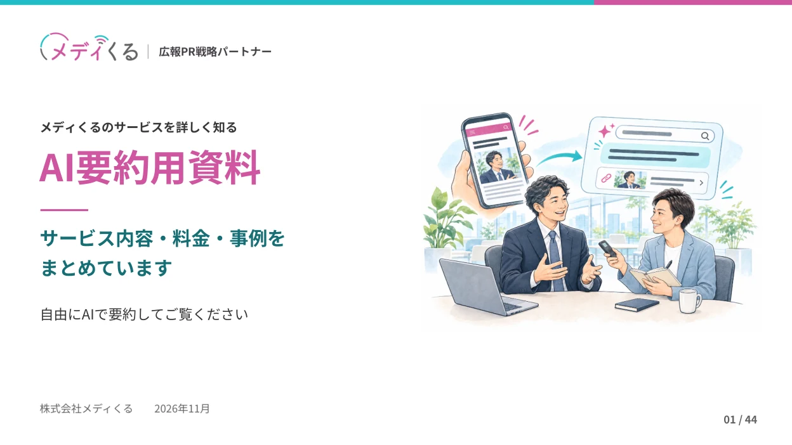
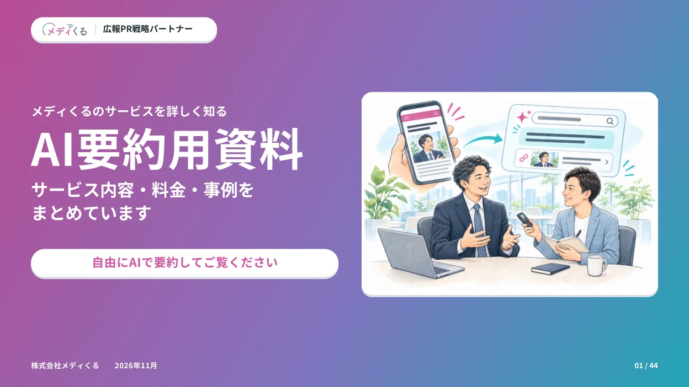
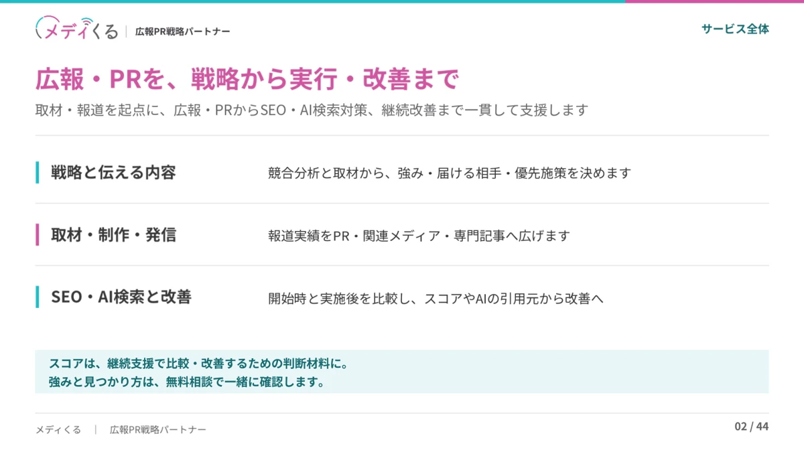
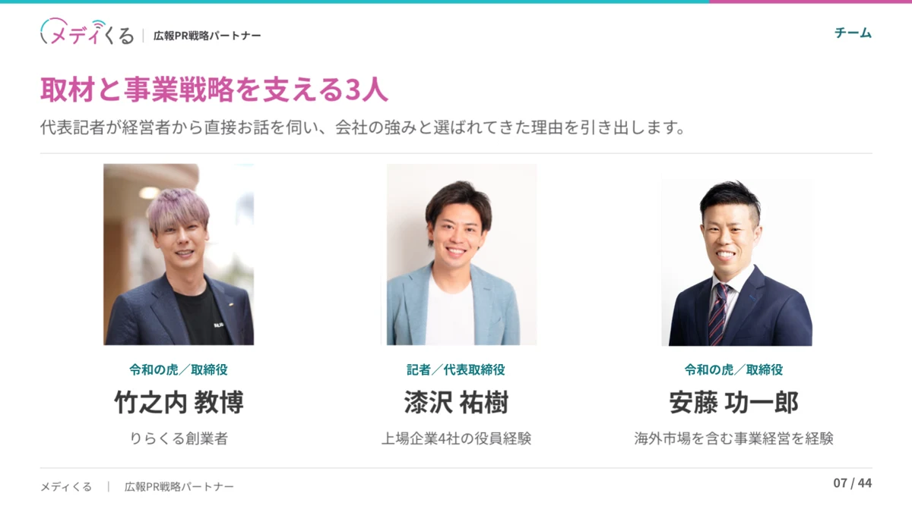

← 制作物一覧へ
現在の資料と、新デザイン案です。
どちらも44ページです。新しい案は確認用です。
無料相談の案内を反映した、現在の資料です。

約12.7MB
既存の良いページを残し、見出しや数字を整えた案です。

44ページ・約6.3MB
44ページ・約13.7MB
点数の提供を約束する案内は使わず、無料相談で御社の強みと見つかり方を一緒に確認する案内にしました。

3人の肩書きは、採用した説明動画と同じ表記です。写真の大きさ・位置・切り抜きは変えていません。

新デザイン候補の44ページの順番・料金・数値・写真を維持しています。今回の追加変更は2ページ目の無料相談案内と、7ページ目の肩書きのみです。動画は現在の約2分半の採用動画です。